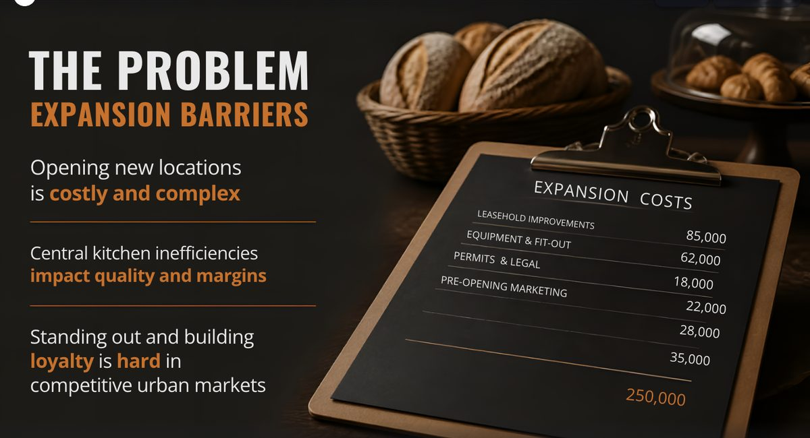
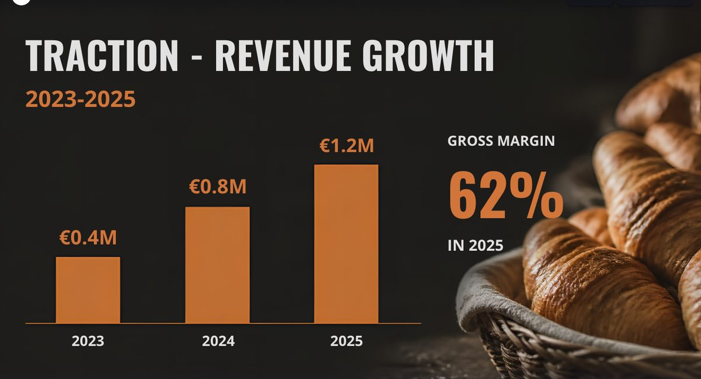
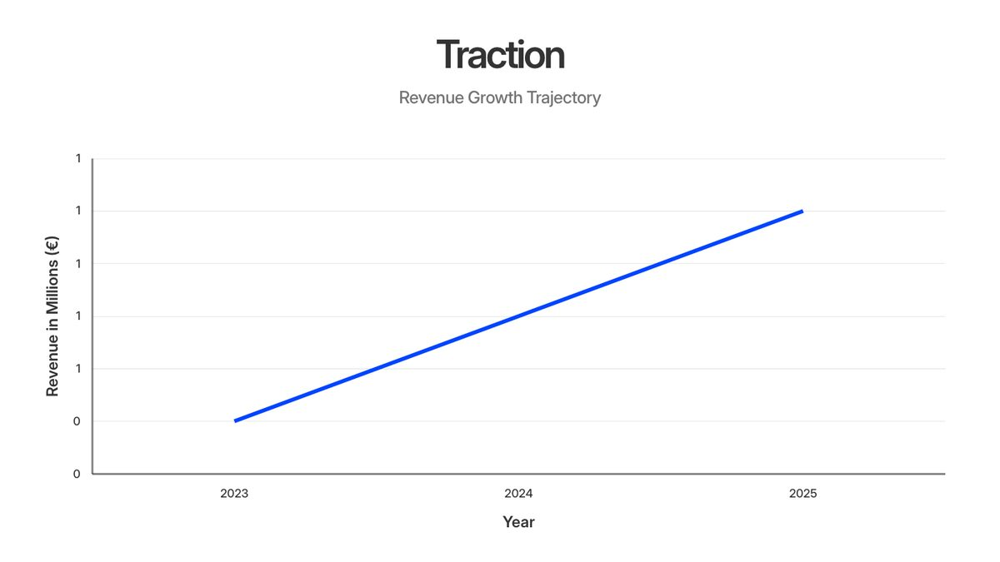
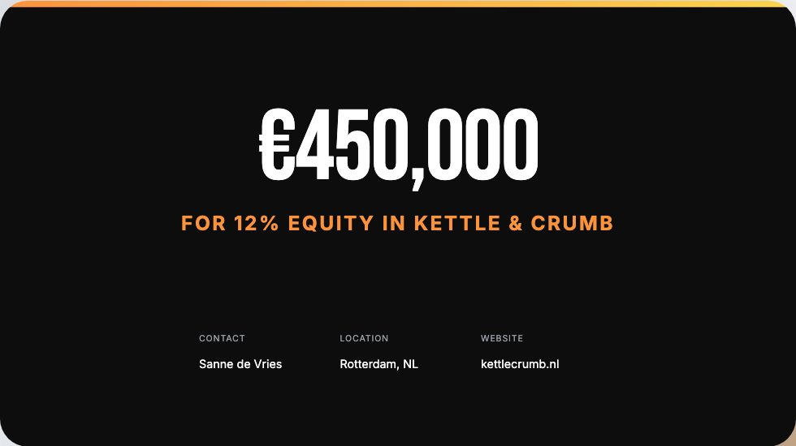
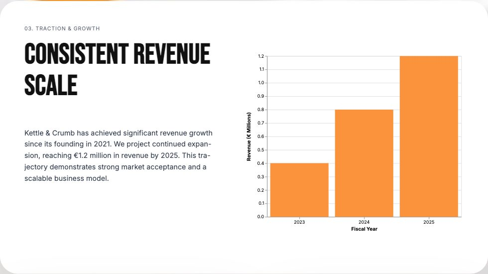
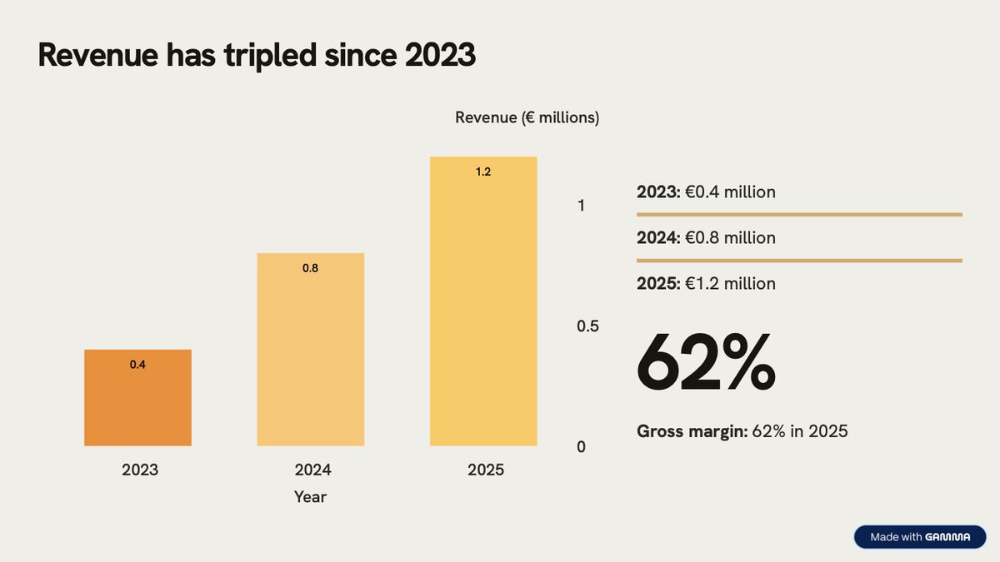

Home › Research › Hands-on test
Hands-on test · run on 2026-09-28On the morning of 28 September 2026 we gave Gamma, Beautiful.ai, Prezi and Canva the same brief for a ten-slide investor deck: eleven facts about a made-up bakery chain and one rule, add no other numbers. Then we checked every deck against 15 tests we wrote down before the first one was generated, from invented numbers and chart accuracy to changing the ask in one prompt, exporting and sharing. This is one run per tool: a case study, not a ranking.
Told to use only eleven facts and add no other numbers, Canva's deck added nine, including an itemised list of expansion costs that ends at 250,000. Gamma, Beautiful.ai and Prezi added none, though Prezi made up a website for the company. Only Gamma's change prompt updated every place the amount appeared.AIBuilder Marketplace, hands-on test, 2026-09-28. Free to quote with attribution.
Sent as the first message to each tool, word for word:
Create a 10-slide investor pitch deck for Kettle & Crumb, a fictional bakery-café chain in Rotterdam, the Netherlands. Use exactly these facts and do not add any other numbers: - Founded in 2021 by Sanne de Vries (CEO) and Tomasz Nowak (head baker). - 3 shops in Rotterdam and 38 employees. - Revenue: €0.4 million in 2023, €0.8 million in 2024 and €1.2 million in 2025. - Gross margin: 62% in 2025. - Plan: open 2 new shops in Utrecht in 2027. - Asking €400,000 for 12% of the company. - Use of funds: 70% new shops, 20% central kitchen equipment, 10% marketing. Slides: 1 title, 2 problem, 3 solution, 4 traction with a revenue chart for 2023-2025, 5 business model, 6 market, 7 team, 8 growth plan, 9 use of funds as a chart, 10 the ask. Do not invent customer numbers, market sizes, quotes or testimonials. If a slide needs a number we did not give, put a clearly marked placeholder such as [MARKET SIZE] instead.
Small enough for a free plan, and built around the traps of AI decks: numbers that must be copied without additions, two charts with known values, a market slide that invites a made-up market size, and an amount that appears in more than one place when you change it later.
| Check | Gamma | Beautiful.ai | Prezi | Canva |
|---|---|---|---|---|
| C01 10 slides in order | Pass | Pass | Passplus a zooming overview | Partialtwo problem slides; funds and ask merged |
| C02 Given numbers correct | Passleft out 2021 | Pass | Partialcalls 2025 revenue a projection | Passleft out 2021 |
| C03 No invented numbers | Pass0 added | Pass0 added | Pass0 added; invented a website | Fail9 added |
| C04 Market placeholder | Pass | Partialplaceholder dropped, no size invented | Pass | Pass |
| C05 Revenue chart to scale | Pass | Partialaxis labels rounded to 0 and 1 | Pass | Failbars 1 : 1.76 : 2.40, not 1 : 2 : 3 |
| C06 Use of funds chart | Pass | Partialeuro amounts, no percentages | Pass | Pass |
| C07 Team right | Pass | Pass | Pass | Pass |
| C08 No invented quotes | Pass | Pass | Pass | Pass |
| C09 Change the ask by prompt | Pass3 of 3 places | Not availableno deck-wide AI; 5 edits by hand | Partialslide 9 still says €400,000 | Paid plan“a premium feature is required” |
| C10 Edit and reorder by hand | Pass | Pass | Pass | Partiallonger title overlaps the text below |
| C11 PowerPoint and PDF export | Passcharts become images | Passtrial; defaults to “as images” | FailAI editor's downloads locked to Plus; other routes not tested | Passcharts become loose shapes |
| C12 Tool branding | Badge“Made with Gamma” on every PDF page | No badge | No fileno exported file to check; logo on the share page | No badgelogo on the share page only |
| C13 Share link, logged out | Not testedbot check blocked our test browser | Passshows the owner's email | Passonly Public on the free plan | Passlink defaulted to “can edit” |
On C09 for Prezi and Canva: in Prezi's case the chat said “I've updated the ask on the last slide”, which is true, but slide 9 opens with “Our €400,000 investment will fuel expansion”, so the deck now contradicts itself. Beautiful.ai has AI per text block (rewrite, shorten, “Generate new”), which offered replacement sentences for one block; changing the deck means editing two text places and recalculating three chart values in euros by hand.
| Gamma | Beautiful.ai | Prezi | Canva | |
|---|---|---|---|---|
| Plan | Free | 14-day Pro trial, card required | Basic (free) | Free |
| Prompt to finished deck | about 7 minutes | about 2.5 minutes | under 4 minutes | about 2 minutes |
| Steps in between | chose a style; the outline stayed empty until we wrote “Please draft the outline.” | accepted the outline | AI editor opens in a pop-up window | accepted the plan |
| Credits | 61 of 400 (deck plus change) | no counter on the trial | 150 of 500 for the deck; the change used none | no counter on the free plan |
| Export on the plan used | PDF, PowerPoint, Google Slides, PNG | PDF, PowerPoint, Google Slides, offline player | none from the AI editor (PDF, PowerPoint labelled editable and SCORM locked to Plus); other download routes not tested | PDF, PowerPoint, images, video |
| Sharing defaults | link off until you choose View | public link shows the owner's email | Public and findable; Unlisted and Private need Plus | “Anyone with the link” opens on “can edit” |
Screenshots from each tool's public share page, opened without logging in (Gamma's from its own PDF export, because its share page sits behind a bot check).






Asked us to pick a style, then stalled: the outline pane stayed empty until we wrote “Please draft the outline.” After that the outline marked both unknowns as [MARKET SIZE] and [COMPETITIVE LANDSCAPE] and the deck kept to the brief, apart from leaving out the founding year.
The change prompt updated all three places on the ask slide and showed the old and new version side by side. Exports keep the text editable, but the two charts arrive in PowerPoint as pictures, and the free plan stamps each PDF page with a badge.
Went from outline to finished deck in about two and a half minutes, with no branding on the slides or files, but you get there through a trial that needs a card. The outline had a [MARKET SIZE] placeholder; the finished market slide dropped it and named Amsterdam as a target city.
Its charts carry the right data but read oddly: a revenue axis labelled 0 and 1, and use of funds in euros rather than the percentages we gave. There is no AI to change the deck as a whole, and PowerPoint export defaults to flat images unless you choose editable.
Built ten slides plus its zooming overview and kept the numbers, placeholder and charts right. It did add things: a company website, a gender for the CEO, and a sentence that presents last year's revenue as a forecast.
The change prompt fixed the ask slide but not the use-of-funds text. On Basic the AI editor's PDF, PowerPoint and SCORM downloads were locked to Plus (the public room page showed PDF and PowerPoint download buttons, to us and to logged-out viewers behind a sign-in, and Prezi's help centre documents a Download PPTX on the dashboard; we tested none of these), and a deck can only be Public: anyone can find it, with the account holder's name on the page. To take ours offline we moved it to the bin.
Rewrote our slide list into its own plan (two problem slides, funds and ask on one) and was the quickest to a finished deck, at about two minutes. It is also the one that broke the brief: nine numbers we never gave, including a costs list, and revenue bars that are not to scale.
Changing the deck with Canva AI needs a paid plan. Exports on the free plan work, without a watermark. Its share link starts on “anyone with the link can edit”, which is worth changing before you send it to an investor.
One run per tool on one day does not support a winner, so this is what the run does support.
Our full reviews: Gamma · Beautiful.ai · Prezi. Our earlier hands-on test: one booking app, three AI builders. How we separate researched reviews from hands-on ones: how we review.
AIBuilder Marketplace, “One Pitch Deck, Four AI Presentation Tools”, hands-on test run on 2026-09-28. Free to quote and reproduce with attribution (CC BY 4.0).